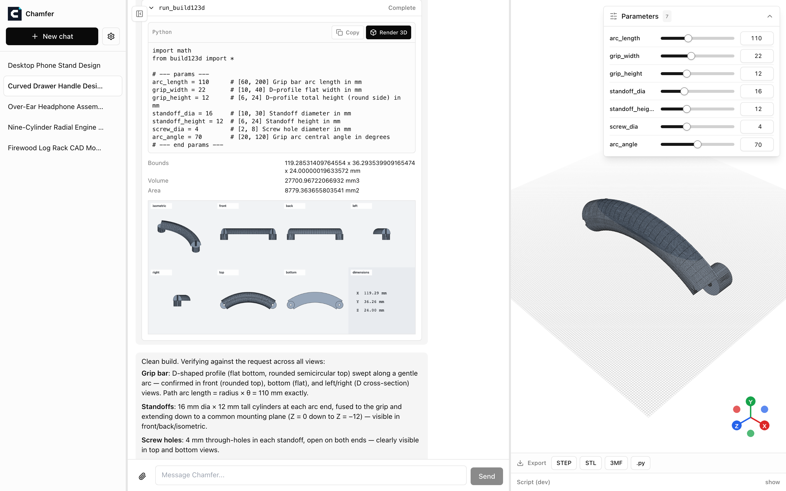
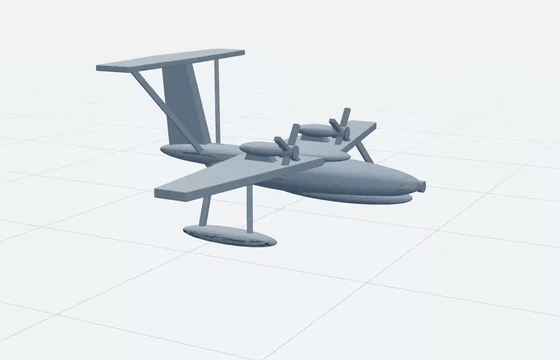
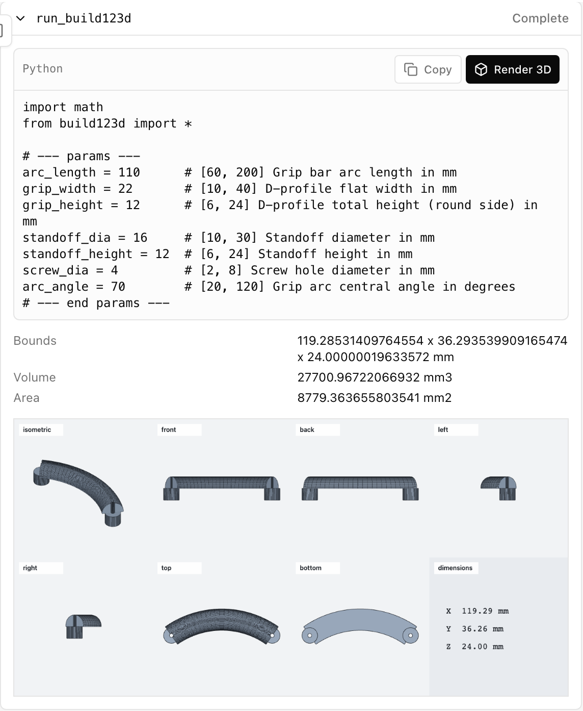
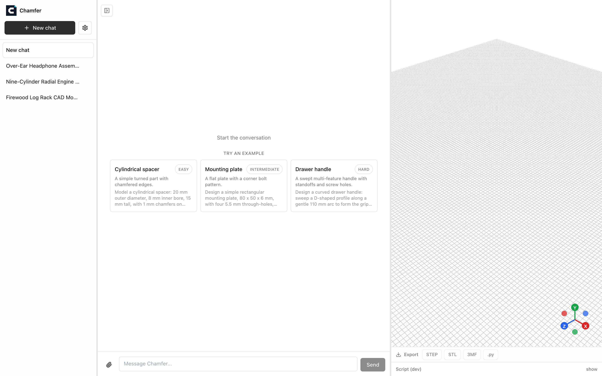
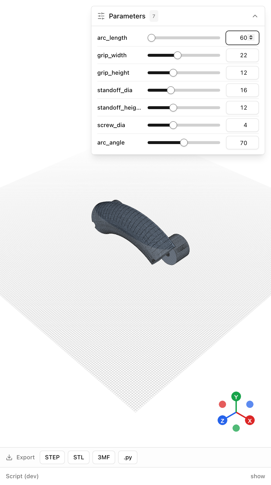
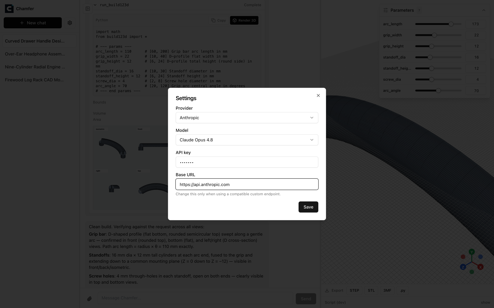

Tell it what you want to make, in plain words or with a photo. An AI designer builds a real 3D part right in your browser, checks its own work from every angle, and fixes its mistakes until the part matches what you asked for. Fine-tune dimensions with sliders, then export a file ready for 3D printing or manufacturing. Everything stays on your computer.


Text to CAD: a full run from prompt to exported part.
Image to 3D: building a part from a single 2D picture.
Every run renders a 7-view inspection sheet (isometric, front, back, left, right, top, bottom, plus measured dimensions) that the agent reads back before it answers, so mistakes get caught and rebuilt inside the loop. The generated Python, the kernel measurements, and the full sheet stay visible in the tool-call card.

Three verified preset prompts, from a simple turned spacer to a swept multi-feature drawer handle, start a generation immediately.

The script's parameter block becomes live sliders. Drag one and the part re-executes in the browser, with no new chat turn and no API call.

STEP, STL, 3MF, or the raw build123d .py script, so the design stays editable outside Chamfer.
Paste or attach sketches and photos in chat to guide the model toward the shape you have in mind.
Anthropic, OpenAI, or Google. Keys are stored locally and only ever shown masked.
Conversations, scripts, and view sheets persist in local SQLite; every session replays after a reload.

Requires Node.js >= 22.19.
npx chamferOpen the printed URL, add your API key in Settings, and describe a part.
chamfer on npm · to hack on the source, clone the repo and run npm install && npm run dev.